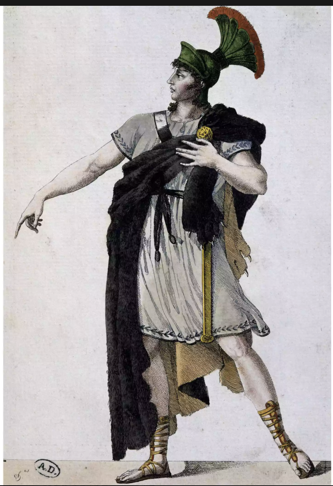
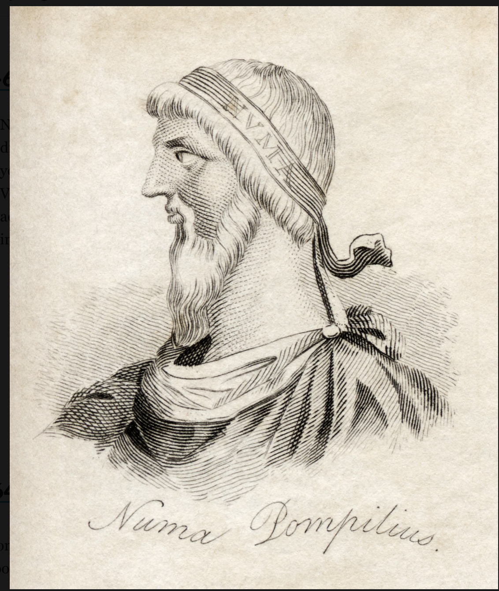
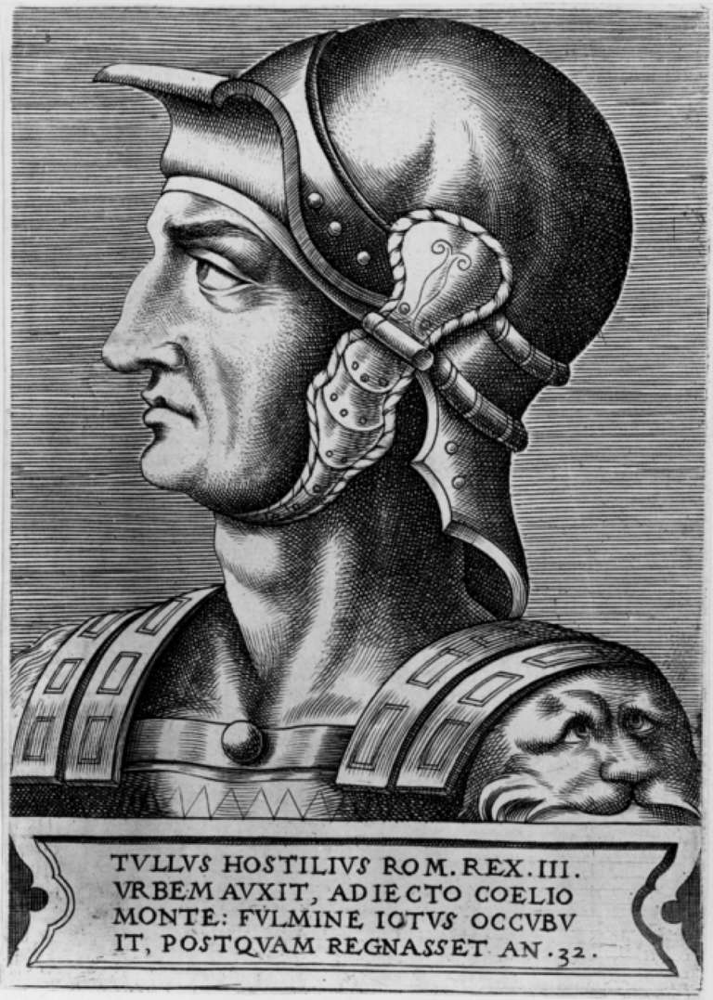
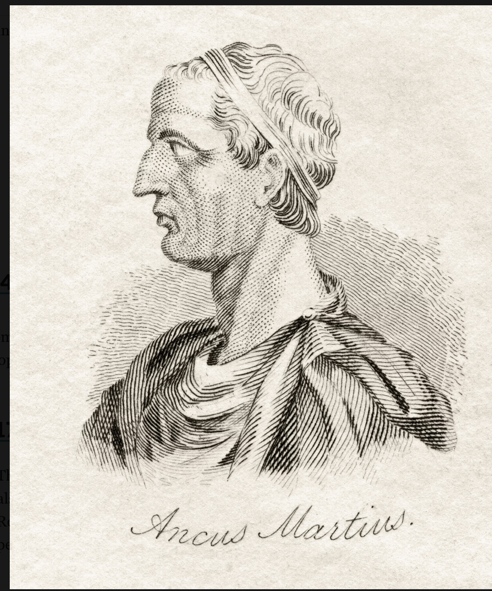
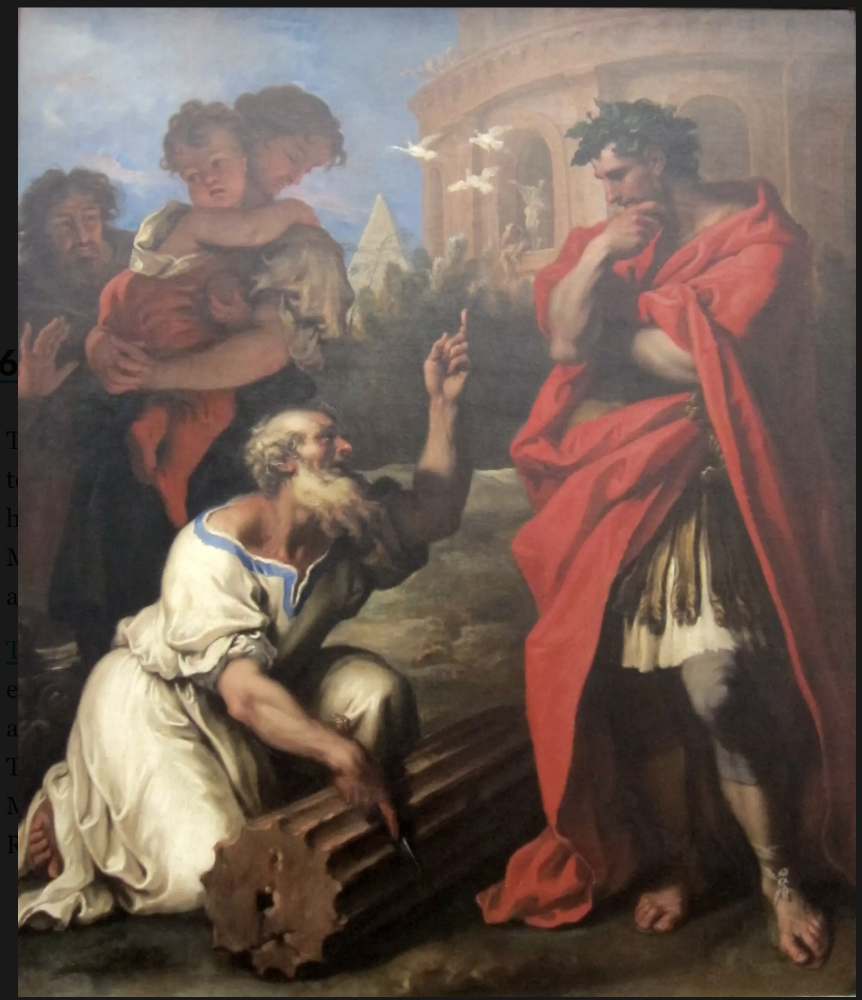
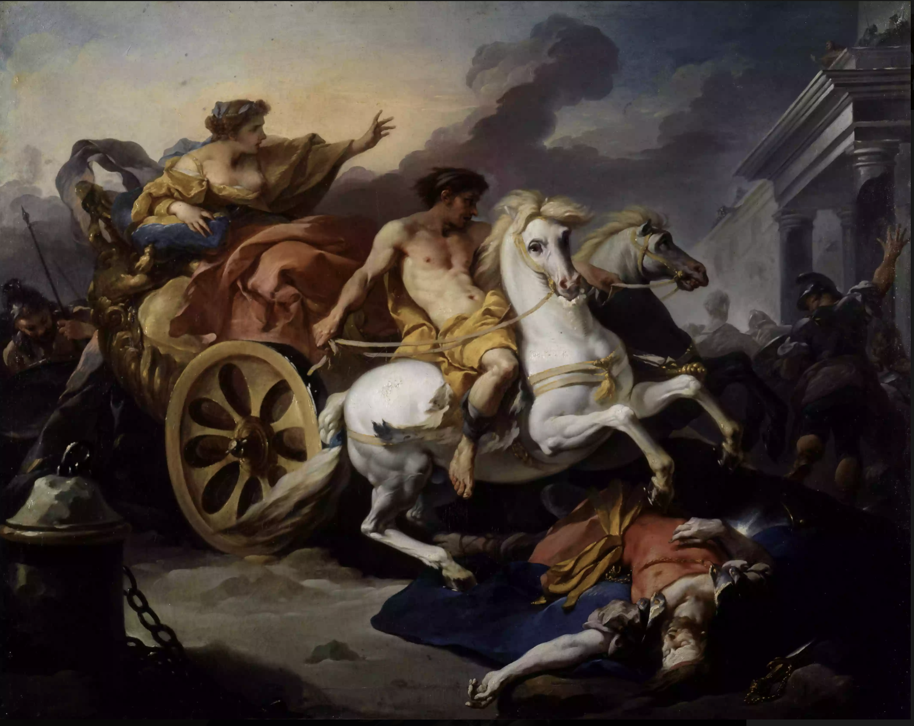

01. Romulus 753-715 BCE
Romulus was the legendary founder of Rome. According to legend, he and his twin brother, Remus, were raised by wolves. After founding Rome, Romulus returned to his native city to recruit residents—most who followed him were men. To secure wives for his citizens, Romulus stole women from the Sabines in an attack known as the "rape of the Sabine women. Following a truce, the Sabine king of Cures, Tatius, co-ruled with Romulus until his death in 648 B.C.
02. Numa Pompilius 715-673 BCE
Romulus was the legendary founder of Rome. According to legend, he and his twin brother, Remus, were raised by wolves. After founding Rome, Romulus returned to his native city to recruit residents—most who followed him were men. To secure wives for his citizens, Romulus stole women from the Sabines in an attack known as the "rape of the Sabine women. Following a truce, the Sabine king of Cures, Tatius, co-ruled with Romulus until his death in 648 B.C.
03. Tullus Hostilius 673-642 BCE
Tullus Hostilius, whose existence is in some doubt, was a warrior king. Little is known about him except that he was elected by the Senate, doubled the population of Rome, added Alban nobles to the Senate of Rome, and built the Curia Hostilia..
04. Ancus Martius 642-617 BCE
The first Etruscan king of Rome, Tarquinius Priscus (sometimes referred to as Tarquin the Elder) had a Corinthian father. After moving to Rome, he became friendly with Ancus Marcius and was named as guardian to Marcius's sons. As king, he gained ascendance over neighboring tribes and defeated the Sabines, Latins, and Etruscans in battle.
Tarquin created 100 new senators and expanded Rome. He also established the Roman Circus Games. While there is some uncertainty about his legacy, it is said that he undertook the construction of the great Temple of Jupiter Capitolinus, started the construction of the Cloaca Maxima (a massive sewer system), and expanded the role of Etruscans in Roman governance.
05. L. Tarquinius Priscus 616-579 BCE
TServius Tullius was the son-in-law of Tarquinius Priscus. He instituted the first census in Rome, which was used to determine the number of representatives each area had in the Senate. Servius Tullius also divided the Roman citizens into tribes and fixed the military obligations of 5 census-determined classes.
06. Servius Tullius 578-535 BCE
The first Etruscan king of Rome, Tarquinius Priscus (sometimes referred to as Tarquin the Elder) had a Corinthian father. After moving to Rome, he became friendly with Ancus Marcius and was named as guardian to Marcius's sons. As king, he gained ascendance over neighboring tribes and defeated the Sabines, Latins, and Etruscans in battle.
07. Tarquinius Superbus (Tarquin the Proud) 534-510 BCE

The tyrannical Tarquinius Superbus or Tarquin the Proud was the last Etruscan or any king of Rome. According to legend, he came to power as a result of the assassination of Servius Tullius and ruled as a tyrant. He and his family were so evil, say the stories, that they were forcibly ousted by Brutus and other members of the Senate.